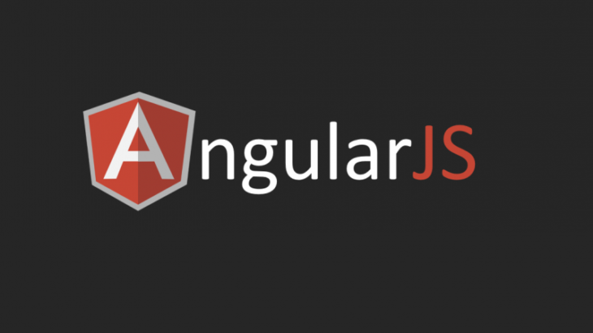

The “State of JavaScript 2019” report offers a glimpse into the future of frontend development. In this article, we’ll review the report, break down key takeaways, and explore some frameworks that are poised to take center stage in 2020.
What is the ‘State of JavaScript?
The “State of JavaScript” report is an annual survey that records and — thanks to guest data visualization expert Amelia Wattenberger — beautifully illustrates the opinions of more than 21,000 developers around the world. First issued in 2016 by designer and developer Sacha Grief, the latest edition covers frontend web development frameworks, databases, state management, relationships between frameworks, reception and ease of use, languages that compile to JavaScript, mobile frameworks, build tools, JavaScript testing tools, and a whole lot more. In my opinion, the “State of JavaScript” report is the first JS-only developer survey to gain universal respect in the JavaScript community. Other popular resources include StackOverflow’s annual developer survey and Jetbrain’s “State of Developer Ecosystem” report, which query roughly 90,000 and 7,000 respondents, respectively.
Top frontend development frameworks
To start, let’s take a look at the most in-demand frontend development frameworks based on factors such as awareness, overall happiness, usage by company size and salary range, show of interest, ease of use, and reach.
React JS

According to the report, React is a “declarative, efficient, and flexible JavaScript library for building user interfaces.” Built by Facebook, React makes it simple to create interactive user interfaces. The framework is designed for building component-centric applications and with backward compatibility in mind, so you can rest assured of its longevity. React has almost 3 million users and a massive developer community. The “State of JavaScript” survey revealed a surge in interest retention from 64 percent to 71 percent over a 12-month period. On the flip side, the number of respondents who do not want to use react again increased by 2 percent. Virtually every JavaScript developer has heard about React, and the percentage of developers who are not interested decreased from 9 percent to 7 percent this year.
Vue JS
Vue.js is a very progressive framework for building user interfaces. It consists of an approachable core library that focuses on the view layer only and an ecosystem of supporting libraries to help you tackle complexity in large single-page applications. Evan You created Vue with the help of hundreds community members, and developers have used the framework in nearly 1.2 million projects, according to GitHub data. Vue.js experienced massive growth in the last 12 months, and the survey data suggests the knowledge gap is closing: 34 percent of developers want to learn Vue, down from 47 percent in the previous report — an indication that many developers have gone from wanting to learn the framework to actually using it. In addition, retention rates skyrocketed from 28 percent to a whopping 40 percent. By now, most JavaScript developers have heard of Vue.js. There is still a knowledge gap and a lack of beginner content, but the Vue team and community seem to be on top of those minor drawbacks. In fact, the composition API forthcoming in Vue 3 could help alleviate these concerns.
Angular JS
Google’s Angular empowers developers to build applications that live on the web, mobile, and desktop. The framework combines declarative templates, dependency injection, end-to-end tooling, and integrated best practices to solve development challenges. It has a useful CLI, so beginners can easily get started. There is even a GUI client called Console. Angular did not have a great year for retention. Compared to last year, the survey revealed a 2 percent drop in the number of people who have used and would continue to use Angular. The overall interest level in Angular also dropped by about 1 percent. Will the fast and lightweight Ivy renderer forthcoming in Angular 9 help boost the interest level among JavaScript developers?
Preact JS
Preact is a JavaScript library that is branded a faster 3kB alternative to React JS that uses the same modern browser API with structures like components and a virtual DOM. More than 18,000 projects use Preact, and it has nearly 25,000 stars on GitHub. Preact has experienced a good level of growth since last year, with retention rate up to 9 percent from 6 percent last year. Awareness has also risen; the number of people who have not heard of the library fell from 28 percent to 24 percent in the last 12 months.
Svelte JS
Svelte is a radical new approach to building user interfaces. Whereas traditional frameworks such as React and Vue do the bulk of their work in the browser, Svelte shifts that work to a compile step that happens when you build your app. Instead of using techniques such as virtual DOM diffing, Svelte writes code that surgically updates the DOM when the state of your app changes. This year, Svelte became one of the top six JS frontend libraries, with nearly 45 percent of developers indicating an interest to learn it. The report’s authors also named Svelte the winner of its “Prediction Award,” recognizing the library for its “explosive debut” in 2019.